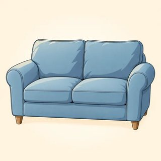
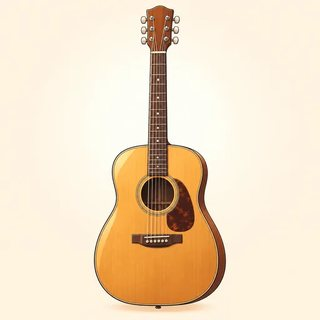
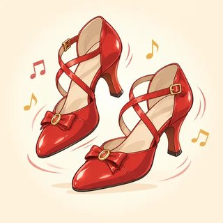

Talking About the Future
Talk about your plans. Guess what will happen. Decide and help in the moment. Make plans with a friend. Now you can talk about the past, the present and the future!
✏️ Write · 👂 Listen · 🗣️ Say · 👥 Work with a partner · 📖 Read
Your plans are your choice. You can talk about your real plans, or a future identity card, or a dream future. All are good. You can always say "Pass."
My Plans — "Going to"
Class C7- 👪 visit my family
- 🎬 see a movie
 go hiking
go hiking- go swimming
 play soccer
play soccer go to the market
go to the market eat out
eat out- cook something special

relax at home- 🧹 clean the house
 travel
travel
learn to play the guitar- 🚗 learn to drive
- 💼 start a new job
⏩ Future time words (now → later):
next + a time name: next Monday, next year. · in + how long from now: in two days, in an hour.
| ✅ Yes | I'm going to visit my sister. · She's going to study. · We're going to travel. |
|---|---|
| ❌ No | I'm not going to work. · He isn't going to come. · They aren't going to wait. |
| ❓ Question | Are you going to cook tonight? · Is she going to stay? |
| 💬 Answer | Yes, I am. / No, I'm not. · Yes, she is. / No, she isn't. |
| ❓ Wh- | What are you going to do? · Where is he going to go? |
After going to: the plain verb. I'm going to eat. (not "eating," not "to eat")
| 🧠 Plan | I decided before now. | I'm going to study English this year. |
|---|---|---|
| 👀 Prediction | I can see it coming. | Look at those black clouds! It's going to rain. |
Write ✓ (she's going to) or ✗ (she isn't going to).
- 👵 visit her aunt
- 🧹 clean the house
- 🎬 see a movie
 go shopping
go shopping - cook
- 🚗 drive
- 💼 work
 go to bed early
go to bed early
🗣️ Tell a partner: "She's going to… She isn't going to…"
Example: (I / visit / my aunt / on Sunday) → I'm going to visit my aunt on Sunday.
1. (I / cook / dinner / tonight) →
2. (She / study / next week) →
3. (We / travel / in the summer) →
4. (They / move / soon) →
5. (He / start / a new job / tomorrow) →
6. (you / call / me / tonight ?) → ?
Example: She's going to work tomorrow. → She isn't going to work tomorrow. → Is she going to work tomorrow?
1. They're going to help us. → → ?
2. You're going to call me tonight. → → ?
3. He's going to learn to drive. → → ?
4. I'm going to cook tonight. → → (you) ?
Write P (a plan: I decided) or E (a prediction: I can see it).
1. "Watch out! That glass is going to fall!"
2. "I'm going to learn to play the guitar this year."
3. "The sky is gray and windy. It's going to storm."
4. "We're going to get married in September."
5. "The bus is full. We're going to be late!"
6. "I'm going to call my brother tonight."
1. I'm going to visit my family ( next / in ) month.
2. Hurry! The movie starts ( next / in ) ten minutes.
3. We're going to move ( next / in ) year.
4. She's going to call you ( next / in ) two days.
5. I'm going to see the doctor ( next / in ) Tuesday.
My plans. Write 6 sentences with going to. Use a time word in each one. Write one "not" sentence and one prediction.
A: What are you going to do this weekend?
B: I'm going to visit my sister in the city. We're going to see a movie on Saturday.
A: Nice! Are you going to stay the night?
B: Yes, I am. I'm not going to drive back so late. What about you?
A: I'm going to relax at home. Look at the forecast, though. It's going to rain all day Sunday!
B: Ha! Then it's a good day to stay in. Are you going to cook something special?
A: Maybe. I'm going to try a new soup recipe. 🍲
✏️ First, write 3 plans. Real, a future identity card, or a dream: your choice.
| When? | I'm going to… |
|---|---|
| this weekend | |
| next month | |
| this year / next year |
🗣️ Then walk and ask: "Are you going to … this weekend?" Write names on the Find Someone Who sheet.
🗣️ Tell the class: "Ana is going to visit her family next month."
- ☐ say my plans with going to: I'm going to visit my sister.
- ☐ say "no" and ask: I'm not going to… / Are you going to…?
- ☐ make a prediction when I can see it: It's going to rain!
- ☐ use tonight, tomorrow, next week, in two days…
- ☐ talk about my plans in 6 sentences
What am I going to do next week? What can I see right now? (a prediction)
Will & Might — Guesses and Quick Decisions
Class C8 sunny
sunny rainy
rainy- ☁️ cloudy
- 💨 windy
- ❄️ snowy / snow
- ⛈️ stormy / a storm
 hot
hot cold
cold
| ✔✔ 100% | ✔ 80% | ? 50% | ✘ 20% | ✘✘ 0% |
|---|---|---|---|---|
| will | will probably | might | probably won't | won't |
| ✅ Yes | I / You / He / She / We / They will ('ll) + verb | It'll be sunny. · She will come. |
|---|---|---|
| ❌ No | won't (= will not) + verb | I won't forget. · It won't rain. |
| 🤷 Maybe | might / might not + verb | I might go. · We might not have time. |
| ❓ Question | Will + you + verb? | Will you be there? |
| 💬 Answer | Yes, I will. / No, I won't. | (not "Yes, I'll.") |
Same for everyone. No -s, no to: She will come. He might be late.
| 🔮 I think | a prediction | I think our team will win. |
|---|---|---|
| ⚡ I decide now | a quick decision | The phone's ringing. — I'll get it! |
| 🤝 I help / I promise | an offer or a promise | That bag is heavy. I'll carry it. · I won't forget. |
Plan from before → going to. Decide now / I think → will. Not sure → might.
Write the weather. Then circle: sure (will) or not sure (might)?
| Day | The weather | Sure or not sure? |
|---|---|---|
| Friday | will / might | |
| Saturday afternoon | will / might | |
| Sunday | will / might | |
| Monday | will / might |
1. Don't worry, I forget your birthday. (a promise)
2. I think our team win. They're the best!
3. The sky is very dark, so I'm sure it be sunny this afternoon.
4. That box is heavy. I carry it for you. (an offer)
5. He's always late, so he probably be on time.
Example: I will go to the party. → I might go to the party.
1. We will travel next summer. →
2. She will be at the meeting. →
3. They will move to a new city. →
4. It won't rain. (maybe not) →
1. The phone's ringing!
2. This bag is really heavy.
3. It's cold in here.
4. I'm so thirsty.
5. I don't understand the homework.
6. Don't forget my birthday!
a. I'll close the window.
b. I'll help you after class.
c. I'll get it!
d. I won't, I promise.
e. I'll carry it for you.
f. I'll get you some water.
1. You decided last week to visit Rome in July. → "I visit Rome in July."
2. The phone rings. You decide to answer it now. → "I answer it."
3. Your friend's bags are heavy. You offer to help. → "I help you."
4. This morning you planned to cook pasta tonight. → "I cook pasta tonight."
5. At a café, the server asks, "What would you like?" You decide now. → "I have a tea, please."
A: The movie starts in ten minutes and I can't find my phone!
B: Don't panic. I'll help you look for it.
A: Thanks. Do you think we'll be late?
B: No, I think it'll be fine. There it is! I'll get it for you.
A: You're a lifesaver. I'll buy the popcorn, then.
B: Deal! I might get a lemonade too. I'm not sure yet.
✏️ Write about next year or the world in 20 years. Real or a dream: your choice.
| will ✔✔ | 1. |
|---|---|
| will ✔✔ | 2. |
| won't ✘✘ | 3. |
| won't ✘✘ | 4. |
| might ? | 5. |
| might ? | 6. |
🗣️ Tell your partner. Your partner says: "I agree!" or "I don't think so. I think…"
- ☐ make a prediction with will / won't: I think it'll rain.
- ☐ say "maybe" with might: I might go to the party.
- ☐ decide or help in the moment: I'll get it! I'll carry it.
- ☐ make a promise: I won't forget.
- ☐ ask "Will you…?" and answer "Yes, I will. / No, I won't."
My life in five years (real or a dream): one will, one might.
Making Plans Together
Class C9- 🎬 see a movie
- have dinner out
 get a coffee
get a coffee go to the park
go to the park- go to the market

go dancing- watch a soccer game
 meet at the station
meet at the station
📅 Time words for plans:
| 📅 My diary | am / is / are + verb-ing + time | I'm meeting Sara on Friday. · We're leaving at 6. |
|---|---|---|
| ❌ No | 'm not / isn't / aren't + -ing | I'm not working tomorrow. |
| ❓ Question | Are you + -ing…? | Are you doing anything tonight? |
The time word decides! I'm working now. = present · I'm working tomorrow. = future
| + plain verb | Let's go to the park. · Why don't we eat out? · Shall we / Should we meet at 7? |
|---|---|
| + -ing / a thing | How about watching a movie? · How about Saturday? |
| Invite | Would you like to come to dinner? · (friends) Do you want to get a coffee? |
Good idea! · Sure, that sounds great. · Yes, I'd love to! · Perfect, see you then!
Sorry, I can't. · I'd love to, but I'm busy. · Maybe another time. · Thanks, but I already have plans.
Write N (now) or F (future). Look at the time word!
1. I'm working now.
2. I'm working tomorrow.
3. She's cooking for us on Sunday.
4. They're watching TV at the moment.
5. We're flying to Miami next month.
6. Shh! The baby is sleeping.
Example: (I / see / the dentist / on Monday) → I'm seeing the dentist on Monday.
1. (We / leave / at 6 o'clock) →
2. (She / start / her new job / next week) →
3. (I / not work / tomorrow) →
4. (you / do / anything / tonight ?) → ?
5. (They / fly / to Rome / on Friday) →
Idea A: go to the beach
1. Let's .
2. Why don't we ?
3. How about ?
Idea B: have a picnic in the park
4. Let's .
5. Why don't we ?
6. How about ?
1. Would you like to come to dinner tonight?
2. Shall we play tennis on Saturday?
3. Do you want to get a coffee now?
4. Let's go dancing on Friday!
a. Yes, I'd love to! What time?
b. Sorry, I can't. I'm working late tonight.
c. I'd love to, but I'm playing soccer on Saturday.
d. Maybe another time. I'm a little busy right now.
1. What does Leo suggest first?
2. Why can't Grace go on Friday?
3. What day are they meeting?
4. What time?
5. Where?
6. Where are they having lunch?
Mia: Are you doing anything this weekend?
Ben: Not really. Why?
Mia: How about seeing a movie? There's a new comedy.
Ben: Good idea! Shall we go on Saturday?
Mia: Saturday's hard. I'm meeting my sister in the afternoon. Why don't we go on Sunday instead?
Ben: Sure, that sounds great. What time?
Mia: Let's meet at 6, and we can eat first.
Ben: Perfect. So we're meeting at 6 on Sunday. See you then!
✏️ Write 4 plans in your diary (real, a future identity card, or imagined). Use -ing: "meeting Tom," "working."
| Afternoon | Evening | |
|---|---|---|
| Monday | ||
| Tuesday | ||
| Wednesday | ||
| Thursday | ||
| Friday | ||
| Saturday | ||
| Sunday |
🗣️ Find a free time with a partner: "Are you doing anything on…?" → "Let's… / How about…?" → "So we're meeting on … at … See you then!"
- ☐ talk about plans in my diary: I'm meeting Sara on Friday.
- ☐ hear "now" or "future" from the time word
- ☐ suggest: Let's… / Why don't we…? / How about …ing?
- ☐ say yes, or say no nicely with a reason
- ☐ arrange to meet a friend and confirm the plan
One plan in my week (with -ing). One idea for a friend: "Let's…"
You can talk about your plans, guess the future, decide and help in the moment, and make plans with a friend. Look at your three "I can…" lists. Is a box empty? Tell your teacher. Practice at home with the online lessons 3.1, 3.2 and 3.3 and the 🔊 buttons.